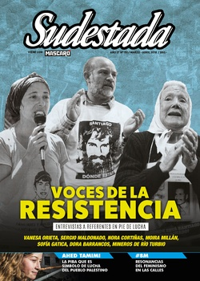

Buscar
Ahed Tamimi. El sopapo que cambió la historia
El 15 de diciembre pasado, una palestina de 16 años encaró a un soldado israelí y, a fuerza de patadas, empujones y un cachetazo, lo echó del patio de su casa. Hoy esa joven, Ahed Tamimi, está prisionera del régimen de Israel y se enfrenta a una dura condena. Pero su historia va más allá de su estampa de símbolo: su vida es la de varios centenares de pibes palestinos, presos y perseguidos por un régimen de ocupación que ignora cualquier tratado internacional e impone en Palestina su lógica racista y criminal. Este marzo Ahed se juega su futuro, apoyada por una campaña internacional que exige su liberación. La pelea por su libertad es también una parte de la historia de lucha del pueblo palestino.
Edición N° 151
Marzo-Abril 2018
Revista bimensual
Comprar edición impresaSumario
- Voces de la resistencia
- Derechos pendientes, Estado ausente
- Las canciones ya no serán las mismas
- Resonancias del #8M
- Ahed Tamimi. El sopapo que cambió la historia
- La corta vida feliz de Federico Moura
- El fascismo ambidiestro
- Romeo y Julieta en la Villa
- Cuando el Terror viajaba en Ford
- Neoliberalismo, lubricidad y prostitución
- Cambiemos. Una lluvia de balas
Compartir Articulo
La palidez. Eso es lo primero que conmueve del rostro de Ahed, de pie ante el tribunal militar de Ofer. Un camperón verde la protege del frío, pero su mirada se distrae con las corridas y murmullos que se generan a su alrededor. Su abogada se le acerca para informarle las novedades. A la distancia, su padre le pregunta cosas que Ahed no llega a escuchar con nitidez. El creciente barullo en la sala se lo impide. Entonces, se aparta los rulos silvestres de su rostro con las manos esposadas, y deja que todos los presentes sean testigos de una sonrisa mínima. El juez ordena desalojar la sala, poco después de informar que el juicio será postergado por tercera vez, ahora hasta el 11 de marzo, con una novedad adicional: se desarrollará a puertas cerradas. La excusa: "proteger la intimidad de la menor", argumenta. Curiosa paradoja: el mismo tribunal que acusa a la joven de 17 años recién cumplidos de doce delitos (entre ellos, detener a un soldado e impedir que cumpla con "su trabajo"), súbitamente se preocupa por su intimidad. "La corte usa ahora el falso pretexto de proteger estos derechos para protegerse a sí misma de las críticas que genera este caso", explica Gaby Lasky, abogada de Ahed, confirmando que la decisión tiene menos que ver con una mirada piadosa sobre la joven y mucho más con la intención de impedir que la prensa cubra el juicio contra una piba de 17 años cuyo único delito fue pegarle un sopapo a un soldado israelí, mientras intentaba echarlo del patio de su casa.
Tres policías acomodan a Ahed en una silla, mientras los presentes comienzan a retirarse. Es la última chance para los fotógrafos. Uno se acerca hasta Ahed. La cámara apunta. Recién entonces Ahed regala una sonrisa plena, levanta su mano esposada y hace la V de la victoria.
Crónica de un sopapo
Como cada viernes desde 2009, el 15 de diciembre pasado un centenar de habitantes del pequeño poblado de Nabi Saleh, a unos veinte kilómetros de Ramallah, salió a la calle a cumplir con el ritual. Como cada viernes, avanzaron por la colina hasta que las Fuerzas de Defensa de Israel (FDI) frenaron su marcha y arrancaron con su también habitual respuesta de gases lacrimógenos y balazos. Como cada viernes, hubo corridas, gritos y piedrazos contra los soldados israelíes. La única salvedad ese viernes de diciembre fue que, una semana antes, Donald Trump reconocía a Jerusalén como capital de Israel, desatando una serie de protestas en todo el territorio palestino. Esa tarde, un destacamento de soldados se atrincheró detrás de un edificio en construcción para estudiar la continuidad de su avance represivo. En ese momento, Mohammed Fadel Tamimi, un pibe de catorce años, se asomó sobre la medianera para seguir el movimiento de las tropas. La respuesta fue un disparo en su rostro. Una bala de acero recubierta de goma penetró por su mandíbula y llegó hasta la cabeza, donde quedó alojada. Herido, Mohammed se derrumbó desde tres metros de altura.
La ambulancia que llevaba al pibe palestino fue detenida en el puesto de control, a la salida de Nabi Saleh, y desviada rumbo a Ramallah. En el hospital Istishari, Mohammed fue intervenido de urgencia. La cirugía para extraer la bala duró seis horas y, según la opinión de los médicos, el resultado fue un milagro. Hoy, Mohammed se recupera de sus graves heridas, tiene el cráneo deformado, dolorosas secuelas, y se estima en seis meses el plazo de rehabilitación. Pero se salvó.
Pocos minutos después, la novedad del balazo contra Mohammed se expandió en todo el caserío. Ahed se enteró del balazo contra su primo y no pudo contener el llanto. Mientras la familia digería la triste noticia, los soldados seguían con su despliegue sobre el pueblo. Dos de ellos eligieron posicionarse en el patio de la casa de Ahed. Fue cuando la joven palestina, indignada, salió de su casa y encaró a uno de los soldados. "¡Vamos! ¡Fuera de mi casa!", les gritó. Sin más armas que sus puños, le hizo frente a un soldado pertrechado para la guerra. El soldado intentó devolver un golpe, pero no lo logró. La reacción del militar enardeció aún más a la joven, que logró hacerlo retroceder a fuerza de patadas y de un sopapo que resonó en todo el mundo. "¡Fuera de mi casa!", le gritó otra vez. La secuencia fue filmada por una cámara casera. En cuestión de horas, el video recorrió el mundo, incluido Israel.
Sin interesarse por el contexto que generó la reacción, la opinión mediática israelí fue unánime: difundieron el comunicado militar como la verdad absoluta, y coincidieron en que el cachetazo de la joven palestina representaba una afrenta intolerable contra las FDI. ¿Quién era aquella niña irreverente, capaz de enfrentarse sola a un soldado armado con un fusil? ¿Cómo era posible que las tropas no hubiesen actuado de inmediato contra aquella impertinente palestina? ¿Cuál sería la respuesta del gobierno ante semejante humillación, que ponía en jaque la hombría del ejército y ridiculizaba a toda la ocupación, a todo una potencia ocupante que parecía sentir en su mejilla el sopapo de Ahed?
La campaña de presión comenzó a ganar temperatura. El periodista Ben Caspit, afirmó: "Deberíamos hacerle pagar a esa palestina un precio en alguna otra oportunidad, en la oscuridad, sin testigos ni cámaras". El ministro de Educación, Naftali Bennett, en ese mismo sentido, aseguró: "Debe terminar su vida en prisión". La respuesta del gobierno de Netanyahu siguió la misma línea: cuatro días después, en horas de la madrugada, un comando del ejército arrancó a Ahed de su casa mientras dormía, y se la llevó a una prisión militar. Su madre, Nariman, también fue detenida después de visitarla en la prisión, horas después. Y su prima, un par de días más tarde.
"Por fin arrestan a joven pesadilla", tituló el portal de noticias Shalom Haverim, que inició su cobertura con la frase: "Aprovechando el silencio y la oscuridad de la noche, soldados israelíes se presentaron en la vivienda de la familia Tamimi y arrestaron a una de las jovencitas que regularmente se ve confrontando a los soldados, escupiéndoles y diciéndoles palabras fuertes, como parte de una campaña mediática pro palestina". El mismo portal define a Ahed como "la adolescente que encabezó las palizas contra los inocentes soldados de las FDI".
La conciencia de Israel estaba a salvo: la piba de 16 años que había osado pegarle un sopapo a su soldado, estaba en prisión, esposada e incomunicada. ¿Alguien en Israel se preguntó, acaso, por los derechos humanitarios de una menor de edad? ¿Llamó la atención a algún distraído la detención de una piba de 16 años por parte de un comando militar? No. Después de todo, según el último informe de UNICEF: "En ningún otro país los niños son sistemáticamente juzgados por tribunales militares de menores lo que, por definición, está lejos de proporcionar las garantías necesarias que aseguren el respeto a sus derechos". Israel mantiene desde 2012 un promedio de 204 niños y niñas palestinas presos cada mes, de los cuales tres cuartas partes sufren algún tipo de violencia física tras ser arrestados...
(La nota completa en la edición gráfica de Sudestada... ¿Por qué publicamos apenas un fragmento de cada artículo? Porque la subsistencia de Sudestada depende en un 100 por ciento de la venta y de la confianza con sus lectores, no recibimos subsidios ni pauta alguna, de modo que la venta directa garantiza que nuestra publicación siga en las calles. Gracias por comprender)
Comentarios
Hugo Montero
Articulos más vistos


LIBRERÍA SUDESTADA

Colección infantil

Distribuidora de Libros

Suscripción

Sudestada en URUGUAY

Otros articulos de esta edición
 Machismo en el foclore y en el tango
Machismo en el foclore y en el tango
Las canciones ya no serán las mismas
En esta era de violencia de género intolerable y de machismos en distintas capas de la sociedad, un debate resuena: ...
 Musiqueros
Musiqueros
La corta vida feliz de Federico Moura
El viernes 20 y el sábado 21 de noviembre de 1987, Virus presentó en el estadio Obras Sanitarias –por entonces ...
El fascismo ambidiestro
En nuestro país los villeros, desde la reinstauración de la democracia, pasaron a ser el enemigo bastardo más eficaz para ...
 En la calle
En la calle
Romeo y Julieta en la Villa
La idea fue de los talleristas de teatro de la Asociación Civil Detrás de Todo: un cortometraje protagonizado por los ...
Voces de la resistencia
Siete referentes. Siete voces que nos representan. Siete historias marcadas por la tristeza, por la rebeldía, por la solidaridad, por ...
 Editorial
Editorial